Kyushu Institute of Technology / RIKEN / Komatsu Ltd.2022#033학습·RL·IL·VLA학술논문
깊이영상 기반 자동 굴착을 위한 적대적 학습 결합 심층 강화학습
Deep Reinforcement Learning With Adversarial Training for Automated Excavation Using Depth Images
Takayuki Osa, Masanori Aizawa · IEEE Access 10 (2022), DOI 10.1109/ACCESS.2022.3140781
한줄 요약 — 65×84 깊이맵을 상태, 3차원 원호 궤적 파라미터를 행동으로 삼고, Q값을 가장 키우는 가상 섭동에는 두 target critic 중 작은 값을 목표로 주는 CAT를 적용한다. 다봉형 최적행동을 CEM으로 직접 탐색해 25만 스텝 시 94.8±2.7% 작업진행과 72.0±11.7% 성공률을 냈지만 실물·토질 변화 검증은 없다.
1.연구 배경 및 동기
깊이영상 기반 자동 굴착에서 연속행동 강화학습이 부딪히는 두 난점
자동 굴착은 한 번의 정해진 동작을 반복하는 문제가 아니다. 버킷이 토양을 제거할 때마다 잔여 지형이 달라지고, 다음 궤적은 현재 토양 형상을 보고 다시 선택해야 한다. 저자들은 별도의 수작업 특징 대신 깊이영상을 직접 상태로 사용하고, 버킷 궤적을 연속값으로 출력하는 강화학습 문제를 다룬다. 목표는 에피소드가 끝날 때까지 초기 토양의 90% 이상을 제거하는 것이며, 매 행동의 보상은 실제로 굴착한 토양량이다.
TD3나 SAC처럼 명시적 actor가 하나의 결정론적 행동 또는 단봉형 분포를 출력하는 방식은 서로 다른 여러 궤적이 비슷하게 좋은 굴착 상태에 불리할 수 있다. 논문은 실제 깊이맵의 Q값 단면에서 복수의 국소 극값을 보이고, 동일 상태에서 두 개의 상이한 두 번째 행동이 모두 성공하는 사례도 제시한다. 따라서 행동을 직접 최적화하는 Qt-Opt가 굴착의 다봉형 최적행동 구조에 더 적합하다는 것이 출발점이다.
그러나 원래 Qt-Opt도 학습 표본이 제한된 구간에서 Q값을 과대평가하고, 그 오차가 CEM의 최대화 과정에 의해 선택 행동으로 증폭될 수 있다. 저자들은 두 critic의 작은 값을 이용하는 max-min 선택과, 상태를 Q값이 커지는 방향으로 교란한 뒤 보수적인 target을 주는 conservative adversarial training을 결합해 이 문제를 완화한다.
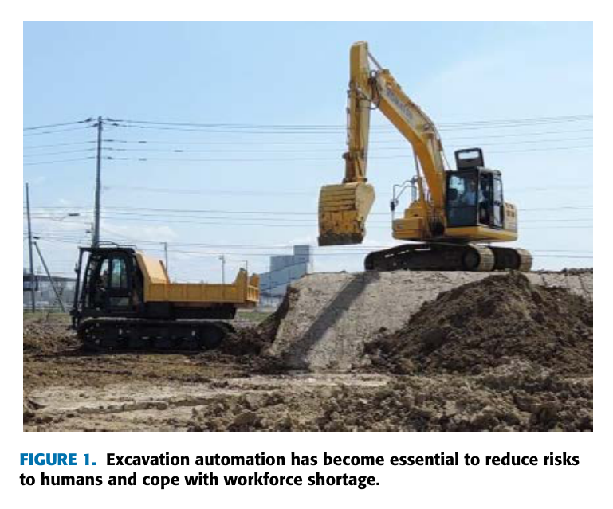
원문 Figure 1 · PDF p.2 — FIGURE 1. Excavation automation has become essential to reduce risks to humans and cope with workforce shortage.
선행 연구의 한계
TD3의 결정론적 actor와 SAC의 단봉형 정책분포는 서로 멀리 떨어진 복수의 최적 굴착 궤적을 동시에 표현하기 어렵다.
기존 Qt-Opt는 critic의 외삽 오차를 CEM이 적극적으로 최대화하므로 방문이 적은 상태·행동의 Q값을 과대평가할 수 있다.
영상 입력을 쓰는 연속행동 굴착은 상태와 행동 차원이 함께 커져, 제한된 시뮬레이션 표본만으로 안정적인 critic을 얻기 어렵다.
실험 당시의 시뮬레이터는 토양 경도를 고정해 궤적 실행 가능성을 제한했으므로 다양한 실제 토질을 직접 반영하지 않는다.
이 연구의 기여
65×84 깊이영상과 3차원 버킷 원호 궤적 파라미터를 연결하는 Qt-Opt 기반 자동 굴착 정책을 구성했다.
critic의 Q값을 가장 증가시키는 상태 섭동을 생성하고 두 target critic 중 작은 값을 가상 표본의 목표로 사용하는 CAT 손실을 제안했다.
두 critic의 최솟값을 행동 점수로 사용하는 max-min action selection과 다봉성을 보존하는 수정 CEM을 결합했다.
TD3, SAC, 원래 Qt-Opt 및 여러 제거 변형을 5개 random seed와 25만 학습 스텝 조건에서 비교해 각 구성요소의 효과를 검증했다.
2.방법론 및 시스템 구성
환경의 상태는 현재 토양 표면을 나타내는 65×84 깊이영상이고, 행동은 버킷이 따라갈 원호 궤적을 정하는 3개의 연속 파라미터다. 선택된 궤적은 사전 정의된 암 추종 제어기가 실행한다. 매 동작 후 굴착량을 보상으로 받고 새로운 깊이영상을 관측하며, 버킷에 토양이 절반 이상 남지 않는 시점에 에피소드를 종료한다.
학습의 핵심은 관측 상태 주변에서 critic이 부당하게 큰 값을 주는 방향을 의도적으로 찾는 것이다. 각 critic의 상태 입력 기울기로 작은 적대 섭동을 만들고, 교란 상태의 회귀 목표에는 두 target critic 값 중 작은 값을 배정한다. 실제 행동을 고를 때도 두 online critic의 최솟값을 CEM 점수로 사용해 한 critic만의 낙관적 오류가 선택 결과를 지배하지 못하게 한다.
처리 파이프라인
1
깊이 상태 구성
굴착 전후 토양 표면을 깊이영상으로 표현하고 65×84 크기로 critic에 입력한다. 별도의 토양 형상 특징이나 목표점 라벨을 사람이 설계하지 않는다.
2
연속 궤적 후보 생성
CEM이 3차원 행동공간에서 버킷 원호 궤적 후보를 반복 샘플링한다. 최종 행동은 상위 후보들의 평균이 아니라 두 critic의 최솟값이 가장 큰 단일 표본으로 정해 다봉형 최적점 사이의 평균화를 피한다.
3
보수적 적대 표본 생성
현재 상태에서 각 critic의 Q값을 가장 키우는 방향의 정규화된 gradient를 구하고 크기 ε의 가상 섭동을 만든다. 이는 critic이 실제 표본 근처에서 만들어 낸 취약한 고Q 영역을 학습 중 노출한다.
4
CAT 정규화
적대 상태와 원 행동의 Q값을 두 target critic 중 작은 값에 맞추는 정규화 손실을 추가한다. 목표값을 보수적으로 잡아 적대 방향의 Q 상승을 억제하고 국소적 매끄러움을 유도한다.
5
경험 재생과 평가
환경 상호작용 자료를 replay buffer에 저장해 두 critic을 갱신한다. 5,000스텝마다 탐색 잡음을 제거한 10개 에피소드로 작업진행률과 성공 여부를 평가한다.
각 critic이 현재 상태 주변에서 가장 낙관적으로 반응하는 제한된 크기의 섭동을 찾는 식이다. 실제 계산에서는 상태 기울기를 L2 정규화한 1차 근사를 사용한다.
보수적 가상 목표
y_{reg}=\min_{i=1,2}Q_{w_i'}(s+d_{adv}^{i},a)
교란된 상태의 목표를 두 target critic 가운데 작은 값으로 정해 단일 critic의 과대평가를 정규화 목표로 복제하지 않게 한다.
Max-min 행동 선택
a=\arg\max_{\tilde a}\min_{i=1,2}Q_{w_i}(s,\tilde a)
두 online critic이 모두 높게 평가하는 행동을 CEM으로 찾는다. 한 critic에서만 비정상적으로 큰 후보는 최솟값 단계에서 걸러진다.
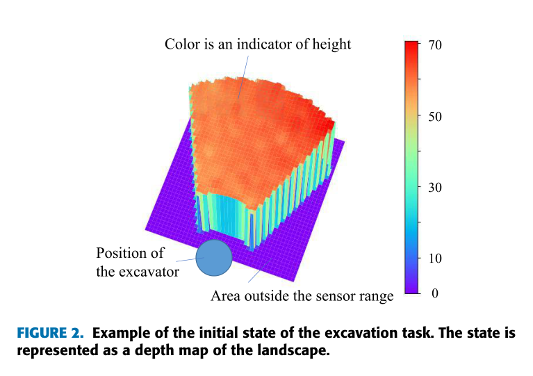
원문 Figure 2 · PDF p.6 — FIGURE 2. Example of the initial state of the excavation task. The state is represented as a depth map of the landscape.
3.핵심 기술
다봉형 행동을 보존하는 수정 CEM
굴착에서는 서로 다른 진입점과 버킷 자세가 비슷한 양의 토양을 제거할 수 있다. 저자들은 상위 M개 후보의 평균을 최종 행동으로 쓰면 서로 떨어진 최적점 사이의 좋지 않은 중간 궤적이 생성될 수 있다고 보고, 마지막 분포에서 최고 점수의 단일 표본을 선택한다.
명시적 actor 없이 critic을 대상으로 행동을 직접 최적화한다.
점수는 두 critic 값의 최솟값이며, 최종 표본은 상위 행동의 평균이 아니다.
Q값 열지도와 서로 다른 두 성공 행동 사례로 복수 극값의 존재를 확인한다.
Conservative Adversarial Training
CAT는 이미지 분류의 virtual adversarial training을 연속행동 Q학습에 맞게 바꾼 구성이다. Q값을 키우는 상태 방향을 공격점으로 삼되 그 지점의 목표는 낙관적인 값이 아니라 두 target critic의 보수적 추정으로 둔다. 그 결과 원래 Qt-Opt에서 나타난 초기 상태 Q값의 상승을 억제한다.
적대 방향은 critic마다 별도로 계산한다.
가상 표본은 환경을 다시 실행하지 않고 실제 replay 표본 주변에서 만든다.
제거실험에서 max-Q adversary와 conservative target 조합이 가장 좋은 학습 성능을 보였다.
깊이영상-궤적 critic
critic은 깊이영상 특징과 연속 궤적 파라미터를 결합해 Q값을 출력한다. 두 critic과 지연 갱신되는 target network를 함께 사용하며, 사전 정의된 추종 제어기가 궤적을 실행하므로 학습기는 저수준 유압제어가 아니라 다음 굴착 원호 선택에 집중한다.
상태는 RGB가 아닌 깊이맵이어서 토양 형상과 버킷 작업공간을 직접 나타낸다.
행동은 세 개의 연속값으로 표현된 원호이며 이산 동작 목록에 제한되지 않는다.
보상은 굴착 토양량으로 주어져 작업진행률과 직접 연결된다.
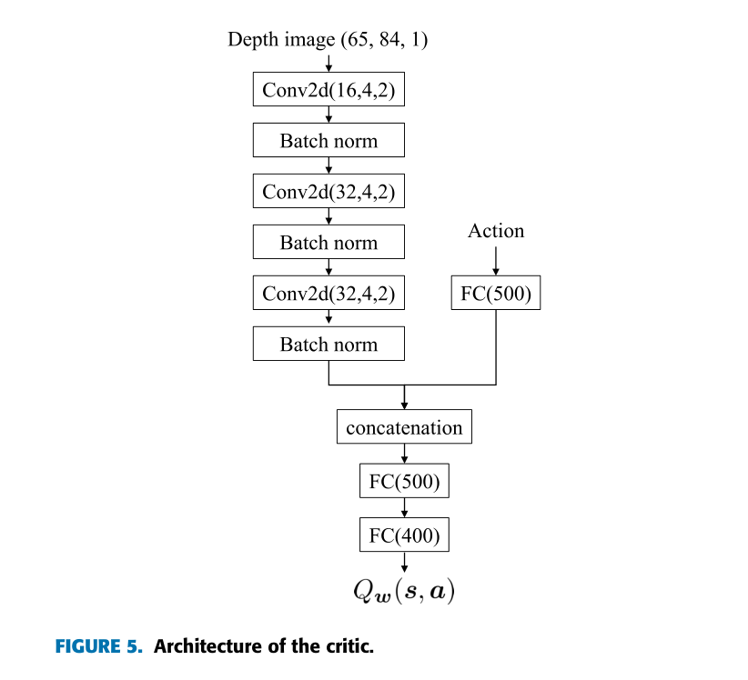
원문 Figure 5 · PDF p.8 — FIGURE 5. Architecture of the critic.
4.실험 결과
실험 환경·장비·데이터
깊이영상 크기는 65×84이며, 한 행동은 버킷 원호를 정의하는 3차원 연속 파라미터다.
토양 경도에 따라 실행 가능한 궤적이 제한되는 굴착 시뮬레이터를 사용했으며 실험 내 토양 경도는 고정했다.
모든 비교법은 동일한 critic 구조를 사용하고 각 조건을 서로 다른 5개 random seed로 학습했다.
실험 프로토콜
에피소드 보상은 각 행동에서 제거한 토양량이고, 버킷 내부 토양이 절반 이하가 되는 조건에서 에피소드를 종료한다.
초기 토양의 90% 이상을 제거하면 성공으로 판정하며, 작업진행률은 제거된 토양의 비율로 계산한다.
총 250,000 환경 스텝을 학습하고 매 5,000스텝마다 탐색 없는 10개 시험 에피소드를 수행했다.
제안법 외에 CEM 표본 선택, 적대 방향, 정규화 목표를 바꾼 변형을 평가해 성능 향상의 원인을 분리했다.
비교 기준
원래 Qt-Opt는 행동공간을 CEM으로 탐색하지만 max-min 행동선택과 CAT 정규화를 사용하지 않는다.
TD3는 결정론적 actor와 twin critic을 쓰는 대표적인 off-policy 연속제어 방법으로 비교했다.
SAC는 엔트로피 정규화 확률정책을 사용하는 연속제어 기준선으로 비교했다.
구성요소 제거실험에서는 상위 5개 CEM 행동 평균, 최소-Q 또는 최대-Q 적대방향, 낙관적·보수적 target 조합을 대조했다.
평가 지표
시험 에피소드의 평균 누적 return
초기 토양 가운데 제거된 비율인 task progress
토양을 90% 이상 제거한 에피소드 비율인 success rate
250,000스텝 학습에 소요된 실제 시간과 초기 상태의 추정 Q값
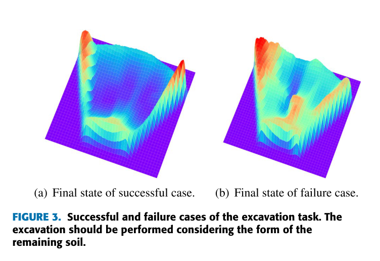
원문 Figure 3 · PDF p.7 — FIGURE 3. Successful and failure cases of the excavation task. The excavation should be performed considering the form of the remaining soil.
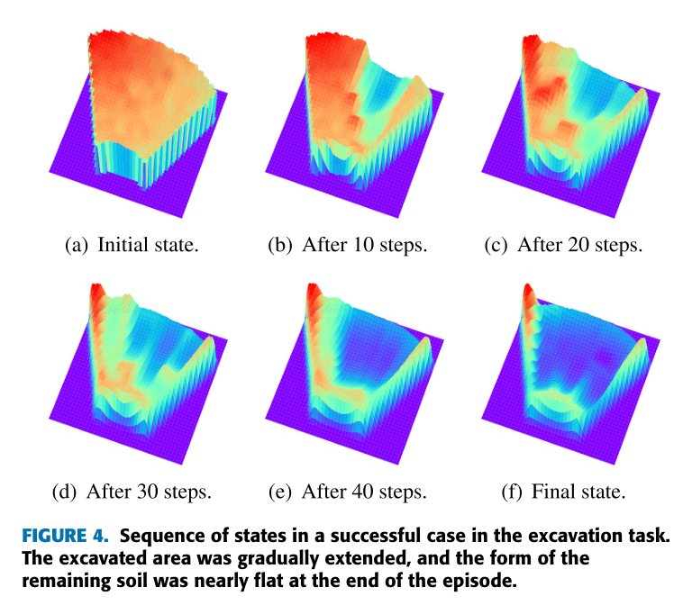
원문 Figure 4 · PDF p.7 — FIGURE 4. Sequence of states in a successful case in the excavation task. The excavated area was gradually extended, and the form of the remaining soil was nearly flat at the end of the episode.
핵심 결과 해석
25만 스텝 뒤 제안법은 작업진행률 94.8±2.7%, return 21.8±3.0, 성공률 72.0±11.7%를 기록했다. 원래 Qt-Opt는 각각 85.0±5.9%, 18.0±3.8, 62.0±16.0%였다. TD3와 SAC는 평균 작업진행률이 각각 63.4±12.9%, 67.8±2.9%에 머물렀고 두 방법 모두 성공률이 0%였다.
학습곡선과 Q값 분석은 성능 차이가 단순히 critic을 두 개 사용한 결과가 아님을 보여준다. max-min 선택만 더하면 방문이 적은 후보를 반복 최대화하면서 오히려 Q 과대평가가 커질 수 있었고, CAT를 함께 적용했을 때 초기 상태 Q값이 가능한 총 보상 규모에 가까운 범위로 억제됐다. 적대 방향과 target을 바꾼 비교에서도 Q를 최대화하는 adversary와 두 target 중 작은 값을 쓰는 조합이 가장 안정적이었다.
CEM의 상위 5개 표본 평균보다 최고 점수 단일 표본을 선택한 변형이 높은 성능을 보였다. 한 상태에서 서로 다른 두 번째 굴착 궤적이 모두 성공하고, 행동 단면의 Q 열지도에도 여러 극값이 나타나므로 평균 행동이 반드시 유효하지 않다는 설계를 뒷받침한다. 다만 이 향상에는 계산비용이 따르며 제안법의 25만 스텝 학습시간은 약 21시간이었다.
정량 결과
평가 항목
정량 결과
조건·맥락
원문 근거
제안법 작업진행률
94.8 ± 2.7%
250,000스텝 뒤 5개 seed 평가; Qt-Opt+max-min action+CAT
PDF p.9
제안법 성공률
72.0 ± 11.7%
초기 토양을 90% 이상 제거한 시험 에피소드 비율
PDF p.9
제안법 return
21.8 ± 3.0
250,000스텝 뒤 시험 에피소드 평균
PDF p.9
원래 Qt-Opt 성능
85.0 ± 5.9% progress; 62.0 ± 16.0% success
max-min action과 CAT가 없는 기준선
PDF p.9
TD3와 SAC 성공률
각각 0 ± 0.0%
동일 critic 구조와 250,000스텝 조건
PDF p.9
학습시간
제안법 21 h; Qt-Opt 15 h; TD3 11.5 h; SAC 12 h
RTX 3090 및 i9-10900K 환경에서 250,000스텝 학습
PDF p.9
실패 사례와 경계조건
잔여 토양이 작고 불규칙한 형태로 남으면 큰 굴착 궤적을 적용하기 어려워 작은 양만 반복 제거하는 비효율 상태가 나타난다.
원래 Qt-Opt와 max-min 선택만 사용한 변형은 실제 가능한 누적 보상 규모보다 초기 Q값을 높게 추정하는 과대평가를 보였다.
TD3와 SAC는 학습 후에도 90% 제거 기준을 충족한 에피소드가 없었으며, 논문은 다봉형 최적행동을 단일 actor가 표현하기 어려운 점을 원인으로 분석한다.
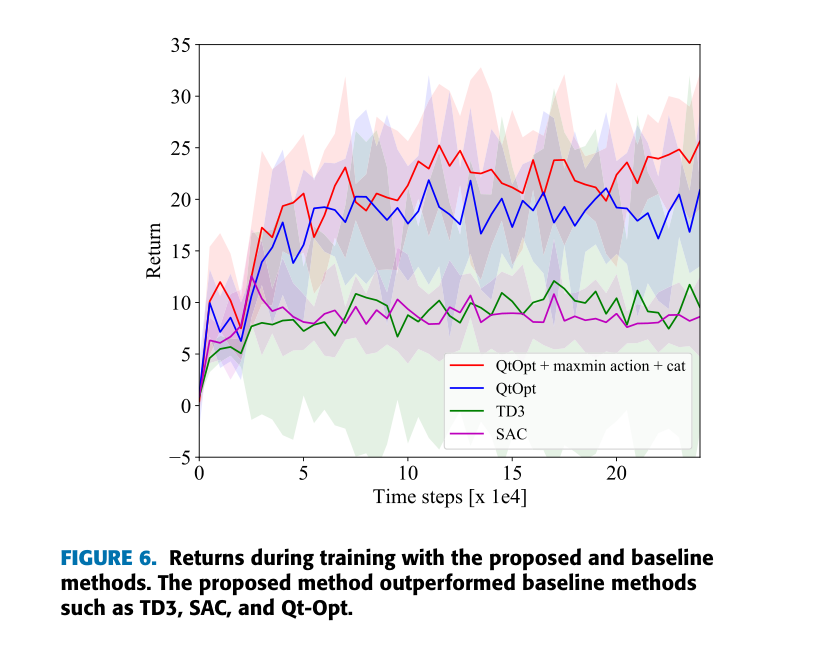
원문 Figure 6 · PDF p.8 — FIGURE 6. Returns during training with the proposed and baseline methods. The proposed method outperformed baseline methods such as TD3, SAC, and Qt-Opt.
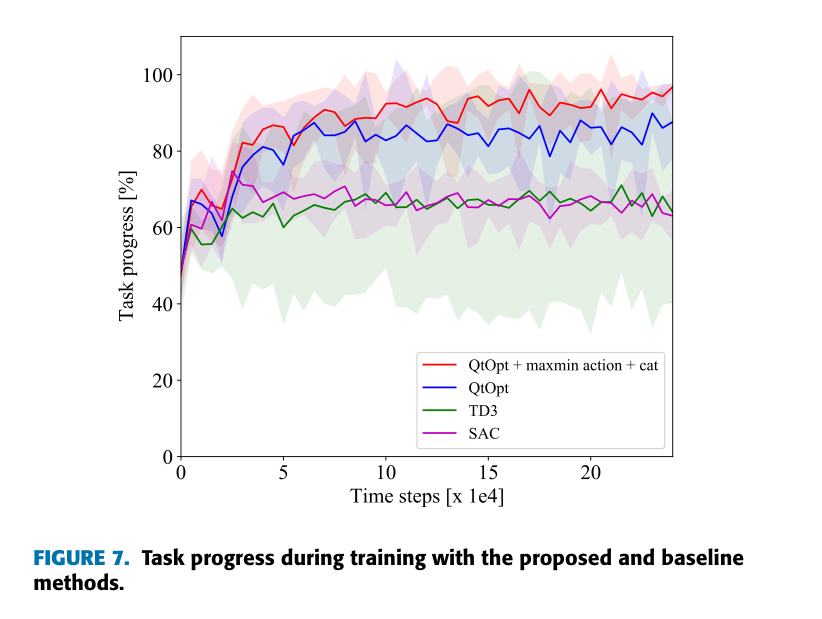
원문 Figure 7 · PDF p.8 — FIGURE 7. Task progress during training with the proposed and baseline methods.
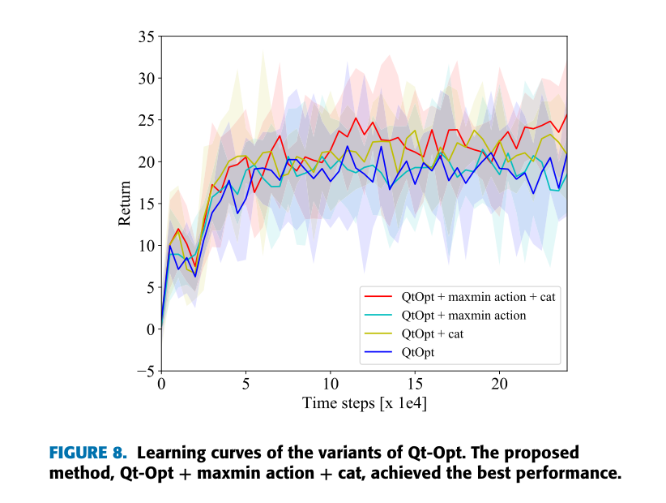
원문 Figure 8 · PDF p.9 — FIGURE 8. Learning curves of the variants of Qt-Opt. The proposed method, Qt-Opt + maxmin action + cat, achieved the best performance.
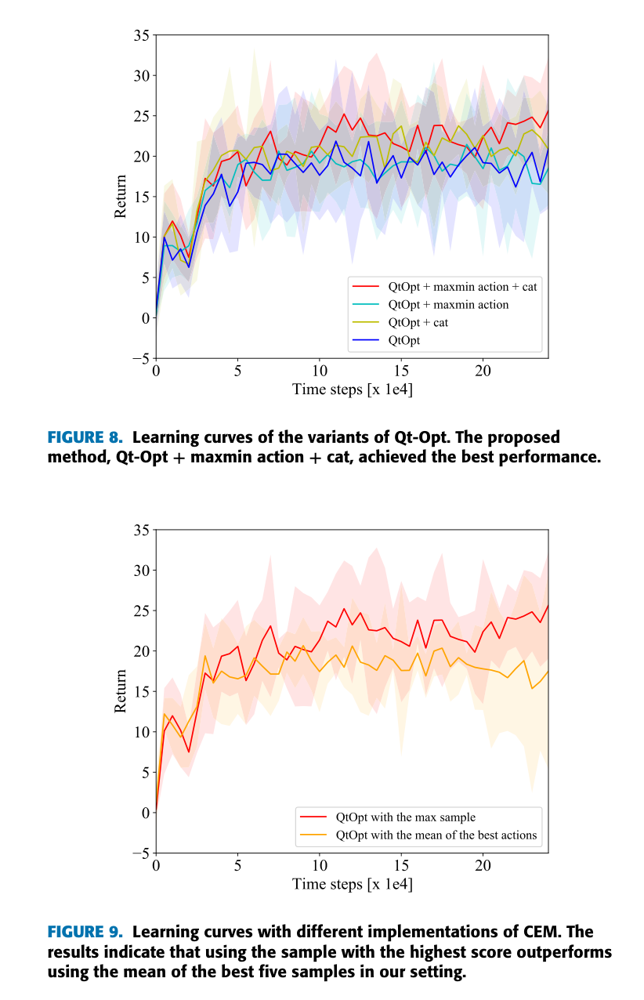
원문 Figure 9 · PDF p.9 — FIGURE 9. Learning curves with different implementations of CEM. The results indicate that using the sample with the highest score outperforms using the mean of the best five samples in our setting.
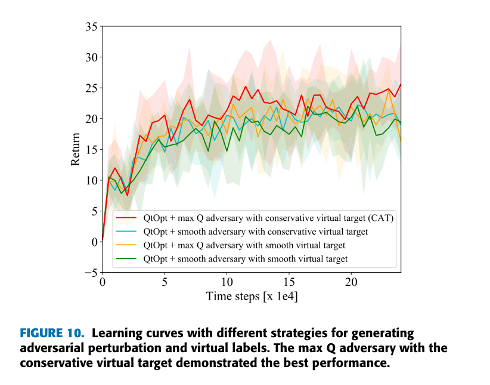
원문 Figure 10 · PDF p.9 — FIGURE 10. Learning curves with different strategies for generating adversarial perturbation and virtual labels. The max Q adversary with the conservative virtual target demonstrated the best performance.
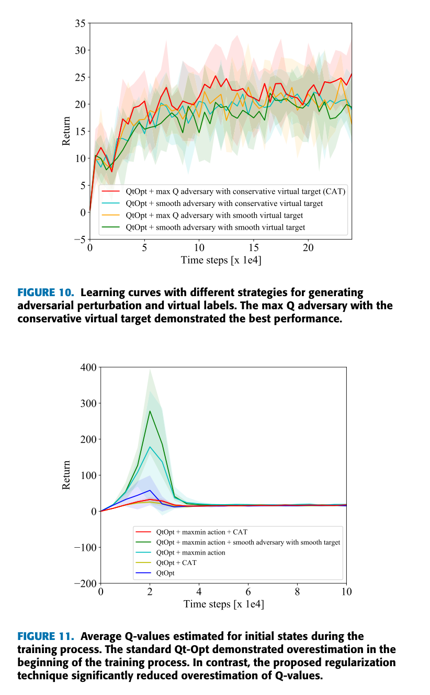
원문 Figure 11 · PDF p.9 — FIGURE 11. Average Q-values estimated for initial states during the training process. The standard Qt-Opt demonstrated overestimation in the beginning of the training process. In contrast, the proposed regularization technique significantly reduced overestimation of Q-values.
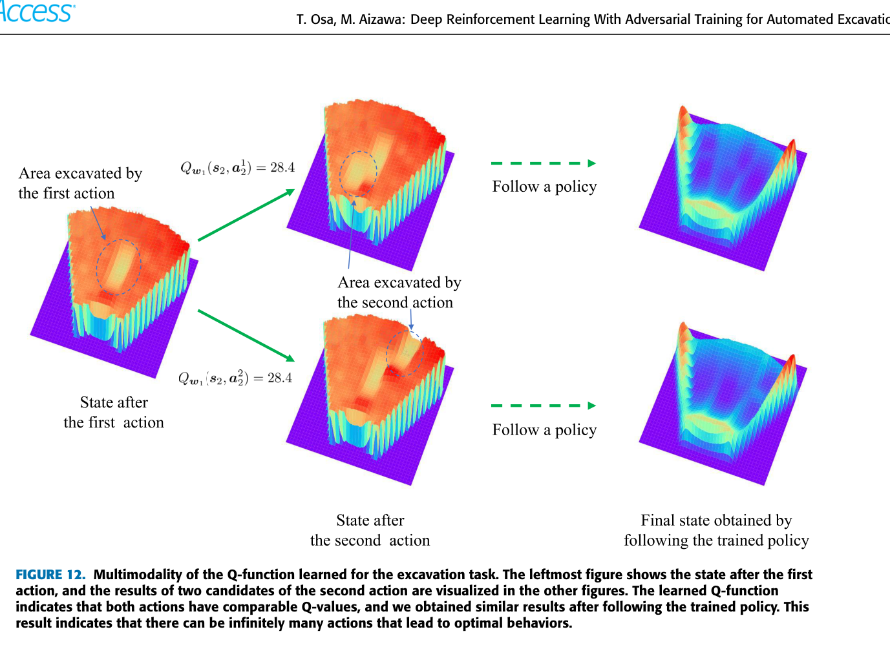
원문 Figure 12 · PDF p.10 — FIGURE 12. Multimodality of the Q-function learned for the excavation task. The leftmost figure shows the state after the first action, and the results of two candidates of the second action are visualized in the other figures. The learned Q-function indicates that both actions have comparable Q-values, and we obtained similar results after following the trained policy. This result indicates that there can be infinitely many actions that lead to optimal behaviors.
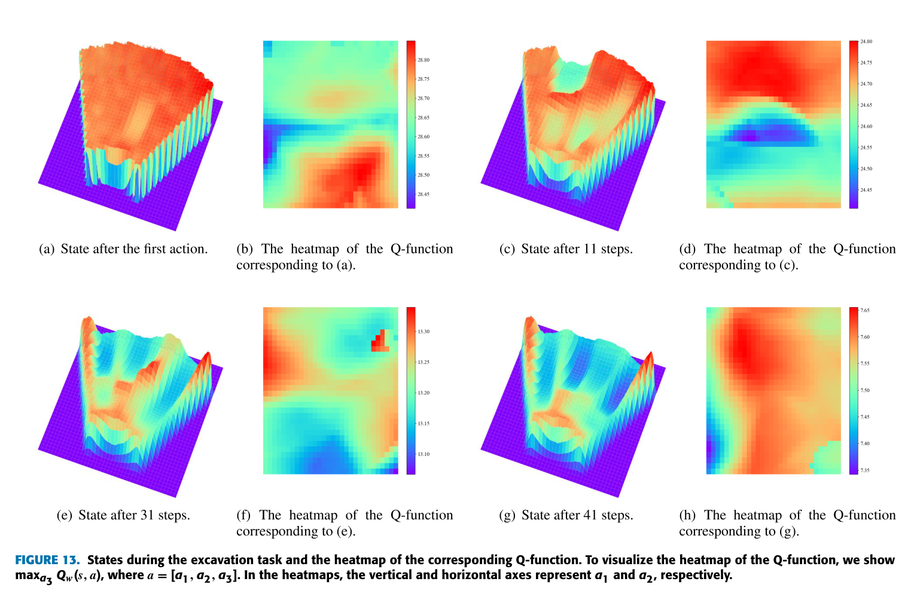
원문 Figure 13 · PDF p.11 — FIGURE 13. States during the excavation task and the heatmap of the corresponding Q-function. To visualize the heatmap of the Q-function, we show maxa3 Qw(s, a), where a = [a1, a2, a3]. In the heatmaps, the vertical and horizontal axes represent a1 and a2, respectively.
5.한계 및 향후 연구
현재 한계
모든 정량결과는 시뮬레이터에서 얻었고 실제 굴삭기나 실제 토양을 이용한 검증은 제시되지 않았다.
시뮬레이션의 토양 경도가 고정되어 수분, 입도, 다짐도 변화에 따른 궤적 실행오차를 평가하지 않았다.
CEM이 매 행동마다 critic을 반복 호출하므로 actor가 한 번 순전파하는 TD3·SAC보다 계산량이 크고 학습시간도 길다.
저수준 버킷 추종은 사전 정의된 제어기에 맡겼으므로 유압 지연이나 추종오차와 학습 정책의 상호작용은 직접 다루지 않는다.
향후 연구
domain randomization으로 토양 물성과 관측조건을 변화시켜 시뮬레이션-실환경 차이를 줄이고 실제 굴삭기로 이전할 필요가 있다.
복수의 최적 모드를 표현하면서도 CEM보다 빠르게 추론할 수 있는 유연한 명시적 정책 표현을 개발할 필요가 있다.
CAT의 보수적 정규화를 actor-critic 구조에 적용해 행동탐색 비용과 Q 과대평가를 함께 줄이는 후속 연구가 필요하다.
토양이 버킷에 남거나 추종이 실패하는 실제 동역학을 상태와 보상에 포함해 폐루프 강건성을 검증해야 한다.
6.한마디로 정리
핵심 방법은?
깊이영상 기반 Qt-Opt에 max-min 행동선택, 최고점 단일 표본 CEM, 보수적 적대훈련을 결합해 다봉형 행동과 Q 과대평가를 동시에 다룬다.
핵심 결과는?
25만 스텝에서 94.8±2.7% 작업진행률과 72.0±11.7% 성공률로 원래 Qt-Opt를 개선했고 TD3·SAC는 성공 에피소드를 만들지 못했다.
한계는?
성과는 고정 토질 시뮬레이션과 사전 정의된 궤적 추종기에 한정되며, CEM 반복탐색 때문에 제안법의 학습시간은 약 21시간으로 늘었다.
필드로봇 관점에서 이 연구의 가장 직접적인 가치는 지형을 고정된 작업대가 아니라 행동마다 바뀌는 상태로 다룬 점이다. 깊이맵에서 다음 버킷 궤적을 곧바로 고르는 구조는 굴착량, 잔여 형상, 행동가치를 한 폐루프로 묶는 상위 작업계획 모듈의 구체적인 사례가 된다.
다만 현장 시스템으로 연결하려면 논문의 시뮬레이션 정책 아래에 유압 추종제어와 안전제약을 두고, 깊이센서 오염·가림 및 토질 변화에 대한 불확실성을 함께 관리해야 한다. 특히 Q값이 높은 행동을 무조건 실행하기보다 충돌, 전복 안정성, 관절한계를 별도 안전필터로 검사하는 구성이 필요하다.
3D 라이다나 스테레오 깊이맵을 동일한 65×84 상태 표현으로 투영해 상위 굴착계획 입력으로 사용할 수 있다.
CAT는 실제 운용 중 드물게 관측되는 지형에서 비정상적으로 큰 Q값이 나오는지 감시하는 불확실성 완화 아이디어로 연결된다.
복수의 유효 궤적을 보존하는 설계는 생산량뿐 아니라 에너지, 장비 안정성, 트럭 대기시간을 함께 고려하는 다목적 행동선택으로 확장할 수 있다.
실증 단계에서는 토질 domain randomization, 실제 추종오차 주입, 안전제약 적용 전후의 성공률을 분리해 평가해야 한다.
7.전체 그림·표
본문 핵심 위치에 배치하지 않은 원문 Figure와 Table을 원문 페이지 순서로 수록한다.
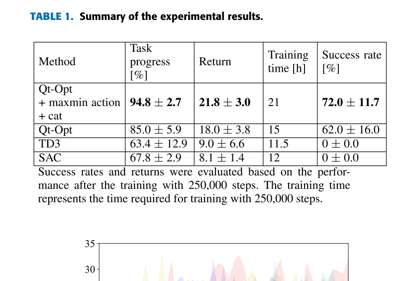
원문 Table 1 · PDF p.9 — TABLE 1. Summary of the experimental results.